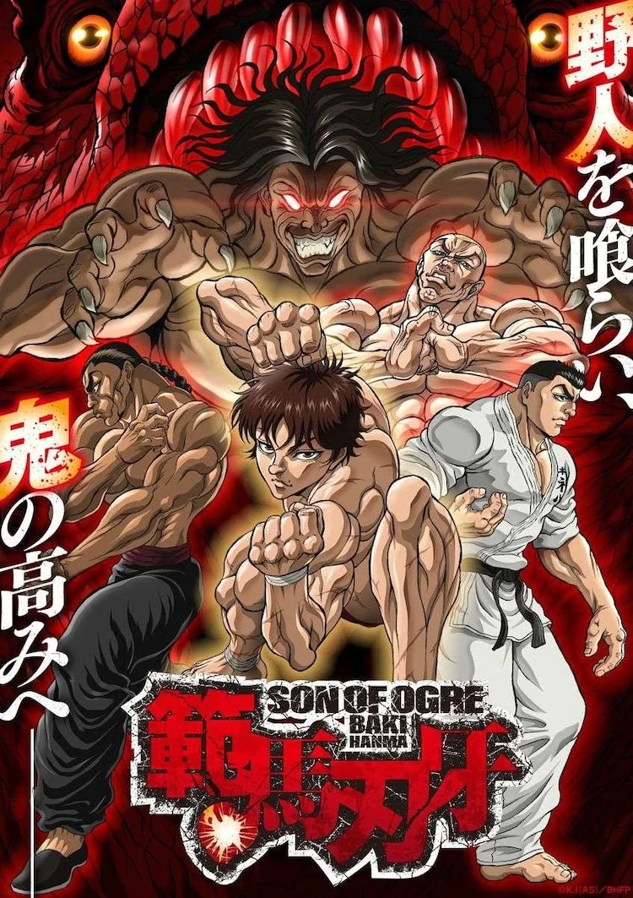
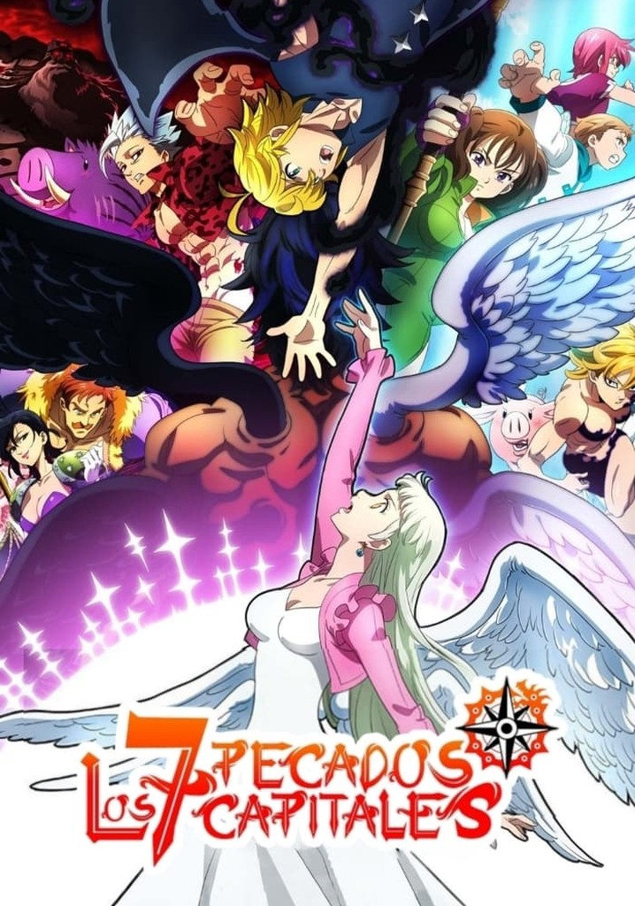

-
Los Simpsons

Sipnosis
"Los Simpson" es una serie animada que narra las satíricas aventuras de una familia disfuncional de clase media en la ciudad ficticia de Springfield, Estados Unidos. La familia está compuesta por Homer, el padre que trabaja en una planta nuclear y es conocido por su torpeza; Marge, la madre y ama de casa que intenta mantener el orden; Bart, el hijo alborotador de diez años; Lisa, la hija superdotada de ocho años; y Maggie, la bebé que rara vez habla.
Trailer
Soundtrack
-
Baki
Sipnosis
Gira en torno a Baki Hanma, un joven y prodigioso luchador que entrena sin descanso con el objetivo de superar a su padre, Yujiro Hanma, quien es considerado el ser más fuerte del mundo.
Trailer
Soundtrack
-
Los 7 pecados capitales
Sipnosis
Gira en torno a la princesa Elizabeth, quien debe encontrar a un grupo de caballeros deshonrados para salvar a su reino de la tiranía de los Caballeros Sagrados. Para ello, busca a los "Siete Pecados Capitales", una banda legendaria de caballeros que fueron acusados injustamente de un golpe de estado hace una década.
Trailer
Soundtrack
- Breaking Bad
- Stranger Things
- The Crown
- Game of Thrones
- The Mandalorian